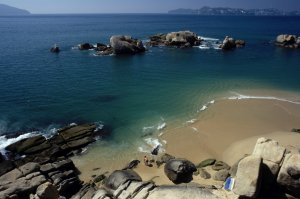

Clima i Vegetació |
A continuació trobaràs un enllaç a un Quadern Virtual sobre el clima i la vegetació, per Educació Primària del Cicle Superior creat pel grup de treball de QV del Departament d'Educació |
|  Clica aquí per obrir el Quadern Virtual |
** Tot i que el quadern està format per més fulls, en aquesta activitat només estudiarem el segon full que tracta sobre la diversitat climàtica.
|